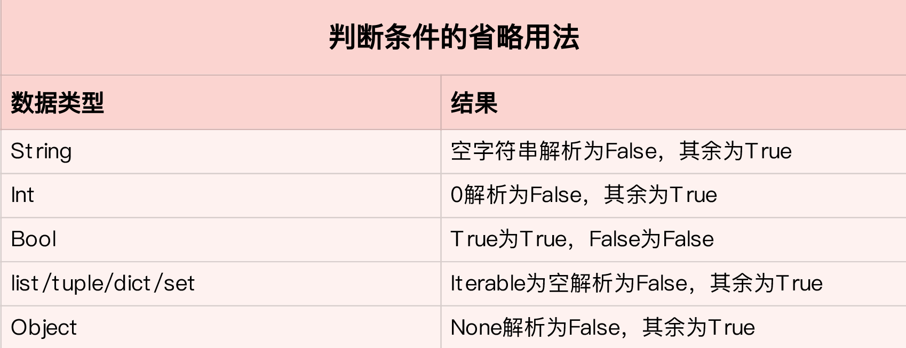

- 00 开篇词 从工程的角度深入理解Python.md
- 01 如何逐步突破，成为Python高手？.md
- 02 Jupyter Notebook为什么是现代Python的必学技术？.md
- 03 列表和元组，到底用哪一个？.md
- 04 字典、集合，你真的了解吗？.md
- 05 深入浅出字符串.md
- 06 Python “黑箱”：输入与输出.md
- 07 修炼基本功：条件与循环.md
- 08 异常处理：如何提高程序的稳定性？.md
- 09 不可或缺的自定义函数.md
- 10 简约不简单的匿名函数.md
- 11 面向对象（上）：从生活中的类比说起.md
- 12 面向对象（下）：如何实现一个搜索引擎？.md
- 13 搭建积木：Python 模块化.md
- 14 答疑（一）：列表和元组的内部实现是怎样的？.md
- 15 Python对象的比较、拷贝.md
- 16 值传递，引用传递or其他，Python里参数是如何传递的？.md
- 17 强大的装饰器.md
- 18 metaclass，是潘多拉魔盒还是阿拉丁神灯？.md
- 19 深入理解迭代器和生成器.md
- 20 揭秘 Python 协程.md
- 21 Python并发编程之Futures.md
- 22 并发编程之Asyncio.md
- 23 你真的懂Python GIL（全局解释器锁）吗？.md
- 24 带你解析 Python 垃圾回收机制.md
- 25 答疑（二）：GIL与多线程是什么关系呢？.md
- 26 活都来不及干了，还有空注意代码风格？！.md
- 27 学会合理分解代码，提高代码可读性.md
- 28 如何合理利用assert？.md
- 29 巧用上下文管理器和With语句精简代码.md
- 30 真的有必要写单元测试吗？.md
- 31 pdb & cProfile：调试和性能分析的法宝.md
- 32 答疑（三）：如何选择合适的异常处理方式？.md
- 33 带你初探量化世界.md
- 34 RESTful & Socket：搭建交易执行层核心.md
- 35 RESTful & Socket：行情数据对接和抓取.md
- 36 Pandas & Numpy：策略与回测系统.md
- 37 Kafka & ZMQ：自动化交易流水线.md
- 38 MySQL：日志和数据存储系统.md
- 39 Django：搭建监控平台.md
- 40 总结：Python中的数据结构与算法全景.md
- 41 硅谷一线互联网公司的工作体验.md
- 42 细数技术研发的注意事项.md
- 43 Q&A：聊一聊职业发展和选择.md
- 加餐 带你上手SWIG：一份清晰好用的SWIG编程实践指南.md
- 结束语 技术之外的几点成长建议.md
07 修炼基本功：条件与循环
你好，我是景霄。
前面几节，我们一起学习了列表、元组、字典、集合和字符串等一系列Python的基本数据类型。但是，如何把这一个个基本的数据结构类型串接起来，组成一手漂亮的代码呢？这就是我们今天所要讨论的“条件与循环”。
我习惯把“条件与循环”，叫做编程中的基本功。为什么称它为基本功呢？因为它控制着代码的逻辑，可以说是程序的中枢系统。如果把写程序比作盖楼房，那么条件与循环就是楼房的根基，其他所有东西都是在此基础上构建而成。
毫不夸张地说，写一手简洁易读的条件与循环代码，对提高程序整体的质量至关重要。
条件语句
首先，我们一起来看一下Python的条件语句，用法很简单。比如，我想要表示y=|x|这个函数，那么相应的代码便是：
# y = |x|
if x < 0:
y = -x
else:
y = x
和其他语言不一样，我们不能在条件语句中加括号，写成下面这样的格式。
if (x < 0)
但需要注意的是，在条件语句的末尾必须加上冒号（:），这是Python特定的语法规范。
由于Python不支持switch语句，因此，当存在多个条件判断时，我们需要用else if来实现，这在Python中的表达是elif。语法如下：
if condition_1:
statement_1
elif condition_2:
statement_2
...
elif condition_i:
statement_i
else:
statement_n
整个条件语句是顺序执行的，如果遇到一个条件满足，比如condition_i满足时，在执行完statement_i后，便会退出整个if、elif、else条件语句，而不会继续向下执行。这个语句在工作中很常用，比如下面的这个例子。
实际工作中，我们经常用ID表示一个事物的属性，然后进行条件判断并且输出。比如，在integrity的工作中，通常用0、1、2分别表示一部电影的色情暴力程度。其中，0的程度最高，是red级别；1其次，是yellow级别；2代表没有质量问题，属于green。
如果给定一个ID，要求输出某部电影的质量评级，则代码如下：
if id == 0:
print('red')
elif id == 1:
print('yellow')
else:
print('green')
不过要注意，if语句是可以单独使用的，但elif、else都必须和if成对使用。
另外，在我们进行条件判断时， 不少人喜欢省略判断的条件，比如写成下面这样：
if s: # s is a string
...
if l: # l is a list
...
if i: # i is an int
...
...
关于省略判断条件的常见用法，我大概总结了一下：

不过，切记，在实际写代码时，我们鼓励，除了boolean类型的数据，条件判断最好是显性的。比如，在判断一个整型数是否为0时，我们最好写出判断的条件：
if i != 0:
...
而不是只写出变量名：
if i:
...
循环语句
讲完了条件语句，我们接着来看循环语句。所谓循环，顾名思义，本质上就是遍历集合中的元素。和其他语言一样，Python中的循环一般通过for循环和while循环实现。
比如，我们有一个列表，需要遍历列表中的所有元素并打印输出，代码如下：
l = [1, 2, 3, 4]
for item in l:
print(item)
1
2
3
4
你看，是不是很简单呢？
其实，Python中的数据结构只要是可迭代的（iterable），比如列表、集合等等，那么都可以通过下面这种方式遍历：
for item in <iterable>:
...
这里需要单独强调一下字典。字典本身只有键是可迭代的，如果我们要遍历它的值或者是键值对，就需要通过其内置的函数values()或者items()实现。其中，values()返回字典的值的集合，items()返回键值对的集合。
d = {'name': 'jason', 'dob': '2000-01-01', 'gender': 'male'}
for k in d: # 遍历字典的键
print(k)
name
dob
gender
for v in d.values(): # 遍历字典的值
print(v)
jason
2000-01-01
male
for k, v in d.items(): # 遍历字典的键值对
print('key: {}, value: {}'.format(k, v))
key: name, value: jason
key: dob, value: 2000-01-01
key: gender, value: male
看到这里你也许会问，有没有办法通过集合中的索引来遍历元素呢？当然可以，其实这种情况在实际工作中还是很常见的，甚至很多时候，我们还得根据索引来做一些条件判断。
我们通常通过range()这个函数，拿到索引，再去遍历访问集合中的元素。比如下面的代码，遍历一个列表中的元素，当索引小于5时，打印输出：
l = [1, 2, 3, 4, 5, 6, 7]
for index in range(0, len(l)):
if index < 5:
print(l[index])
1
2
3
4
5
当我们同时需要索引和元素时，还有一种更简洁的方式，那就是通过Python内置的函数enumerate()。用它来遍历集合，不仅返回每个元素，并且还返回其对应的索引，这样一来，上面的例子就可以写成:
l = [1, 2, 3, 4, 5, 6, 7]
for index, item in enumerate(l):
if index < 5:
print(item)
1
2
3
4
5
在循环语句中，我们还常常搭配continue和break一起使用。所谓continue，就是让程序跳过当前这层循环，继续执行下面的循环；而break则是指完全跳出所在的整个循环体。在循环中适当加入continue和break，往往能使程序更加简洁、易读。
比如，给定两个字典，分别是产品名称到价格的映射，和产品名称到颜色列表的映射。我们要找出价格小于1000，并且颜色不是红色的所有产品名称和颜色的组合。如果不用continue，代码应该是下面这样的：
# name_price: 产品名称(str)到价格(int)的映射字典
# name_color: 产品名字(str)到颜色(list of str)的映射字典
for name, price in name_price.items():
if price < 1000:
if name in name_color:
for color in name_color[name]:
if color != 'red':
print('name: {}, color: {}'.format(name, color))
else:
print('name: {}, color: {}'.format(name, 'None'))
而加入continue后，代码显然清晰了很多：
# name_price: 产品名称(str)到价格(int)的映射字典
# name_color: 产品名字(str)到颜色(list of str)的映射字典
for name, price in name_price.items():
if price >= 1000:
continue
if name not in name_color:
print('name: {}, color: {}'.format(name, 'None'))
continue
for color in name_color[name]:
if color == 'red':
continue
print('name: {}, color: {}'.format(name, color))
我们可以看到，按照第一个版本的写法，从开始一直到打印输出符合条件的产品名称和颜色，共有5层for或者if的嵌套；但第二个版本加入了continue后，只有3层嵌套。
显然，如果代码中出现嵌套里还有嵌套的情况，代码便会变得非常冗余、难读，也不利于后续的调试、修改。因此，我们要尽量避免这种多层嵌套的情况。
前面讲了for循环，对于while循环，原理也是一样的。它表示当condition满足时，一直重复循环内部的操作，直到condition不再满足，就跳出循环体。
while condition:
....
很多时候，for循环和while循环可以互相转换，比如要遍历一个列表，我们用while循环同样可以完成：
l = [1, 2, 3, 4]
index = 0
while index < len(l):
print(l[index])
index += 1
那么，两者的使用场景又有什么区别呢？
通常来说，如果你只是遍历一个已知的集合，找出满足条件的元素，并进行相应的操作，那么使用for循环更加简洁。但如果你需要在满足某个条件前，不停地重复某些操作，并且没有特定的集合需要去遍历，那么一般则会使用while循环。
比如，某个交互式问答系统，用户输入文字，系统会根据内容做出相应的回答。为了实现这个功能，我们一般会使用while循环，大致代码如下：
while True:
try:
text = input('Please enter your questions, enter "q" to exit')
if text == 'q':
print('Exit system')
break
...
...
print(response)
except Exception as err:
print('Encountered error: {}'.format(err))
break
同时需要注意的是，for循环和while循环的效率问题。比如下面的while循环：
i = 0
while i < 1000000:
i += 1
和等价的for循环：
for i in range(0, 1000000):
pass
究竟哪个效率高呢？
要知道，range()函数是直接由C语言写的，调用它速度非常快。而while循环中的“i += 1”这个操作，得通过Python的解释器间接调用底层的C语言；并且这个简单的操作，又涉及到了对象的创建和删除（因为i是整型，是immutable，i += 1相当于i = new int(i + 1)）。所以，显然，for循环的效率更胜一筹。
条件与循环的复用
前面两部分讲了条件与循环的一些基本操作，接下来，我们重点来看它们的进阶操作，让程序变得更简洁高效。
在阅读代码的时候，你应该常常会发现，有很多将条件与循环并做一行的操作，例如：
expression1 if condition else expression2 for item in iterable
将这个表达式分解开来，其实就等同于下面这样的嵌套结构：
for item in iterable:
if condition:
expression1
else:
expression2
而如果没有else语句，则需要写成：
expression for item in iterable if condition
举个例子，比如我们要绘制y = 2*|x| + 5 的函数图像，给定集合x的数据点，需要计算出y的数据集合，那么只用一行代码，就可以很轻松地解决问题了：
y = [value * 2 + 5 if value > 0 else -value * 2 + 5 for value in x]
再比如我们在处理文件中的字符串时，常常遇到的一个场景：将文件中逐行读取的一个完整语句，按逗号分割单词，去掉首位的空字符，并过滤掉长度小于等于3的单词，最后返回由单词组成的列表。这同样可以简洁地表达成一行：
text = ' Today, is, Sunday'
text_list = [s.strip() for s in text.split(',') if len(s.strip()) > 3]
print(text_list)
['Today', 'Sunday']
当然，这样的复用并不仅仅局限于一个循环。比如，给定两个列表x、y，要求返回x、y中所有元素对组成的元组，相等情况除外。那么，你也可以很容易表示出来：
[(xx, yy) for xx in x for yy in y if xx != yy]
这样的写法就等价于：
l = []
for xx in x:
for yy in y:
if xx != yy:
l.append((xx, yy))
熟练之后，你会发现这种写法非常方便。当然，如果遇到逻辑很复杂的复用，你可能会觉得写成一行难以理解、容易出错。那种情况下，用正常的形式表达，也不失为一种好的规范和选择。
总结
今天这节课，我们一起学习了条件与循环的基本概念、进阶用法以及相应的应用。这里，我重点强调几个易错的地方。
在条件语句中，if可以单独使用，但是elif和else必须和if同时搭配使用；而If条件语句的判断，除了boolean类型外，其他的最好显示出来。
在for循环中，如果需要同时访问索引和元素，你可以使用enumerate()函数来简化代码。
写条件与循环时，合理利用continue或者break来避免复杂的嵌套，是十分重要的。
要注意条件与循环的复用，简单功能往往可以用一行直接完成，极大地提高代码质量与效率。
思考题
最后给你留一个思考题。给定下面两个列表attributes和values，要求针对values中每一组子列表value，输出其和attributes中的键对应后的字典，最后返回字典组成的列表。
attributes = ['name', 'dob', 'gender']
values = [['jason', '2000-01-01', 'male'],
['mike', '1999-01-01', 'male'],
['nancy', '2001-02-01', 'female']
]
# expected output:
[{'name': 'jason', 'dob': '2000-01-01', 'gender': 'male'},
{'name': 'mike', 'dob': '1999-01-01', 'gender': 'male'},
{'name': 'nancy', 'dob': '2001-02-01', 'gender': 'female'}]
你能分别用一行和多行条件循环语句，来实现这个功能吗？
欢迎在留言区写下你的答案，还有你今天学习的心得和疑惑，也欢迎你把这篇文章分享给你的同事、朋友。
© 2019 - 2023 Liangliang Lee. Powered by gin and hexo-theme-book.